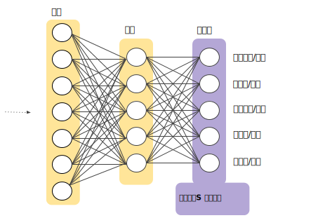

多类别神经网络 (Multi-Class Neural Networks)：一对多
一对多提供了一种利用二元分类的方法。鉴于一个分类问题会有 N 个可行的解决方案，一对多解决方案包括 N 个单独的二元分类器，每个可能的结果对应一个二元分类器。在训练期间，模型会训练一系列二元分类器，使每个分类器都能回答单独的分类问题。以一张狗狗的照片为例，可能需要训练五个不同的识别器，其中四个将图片看作负样本（不是狗狗），一个将图片看作正样本（是狗狗）。即：
- 这是一张苹果的图片吗？不是。
- 这是一张熊的图片吗？不是。
- 这是一张糖果的图片吗？不是。
- 这是一张狗狗的图片吗？是。
- 这是一张鸡蛋的图片吗？不是。
当类别总数较少时，这种方法比较合理，但随着类别数量的增加，其效率会变得越来越低下。
我们可以借助深度神经网络（在该网络中，每个输出节点表示一个不同的类别）创建明显更加高效的一对多模型。下图展示了这种方法：
